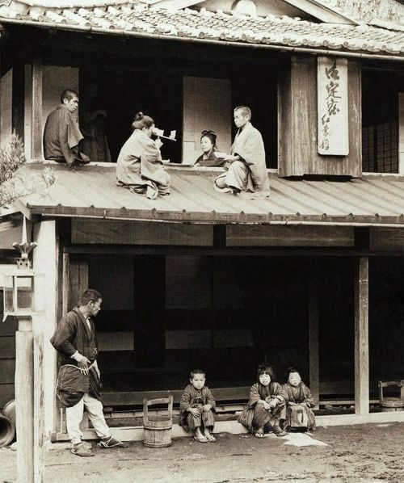
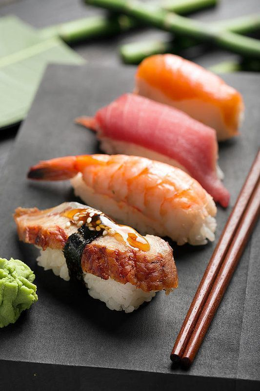

WELCOME
Introduction
Japan info provides information about Japan including the history of Japan, food, Japanese cities, and Japanese fashion trends 2022.
I hope this site will give you a clear and informative insight of Japan.
History
Food
Cities
Fashion